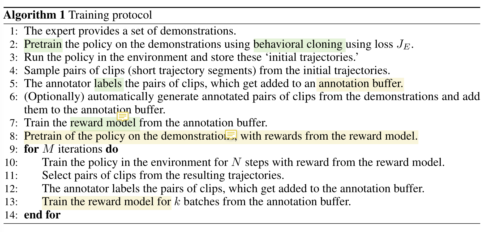

[TOC]
- Title: Reward learning from human preferences and demonstractions in Atari
- Author: Borja Ibarz et. al.
- Publish Year: 2018
- Review Date: Nov 2021
Summary of paper
This needs to be only 1-3 sentences, but it demonstrates that you understand the paper and, moreover, can summarize it more concisely than the author in his abstract.
The author proposed a method that uses human expert’s annotation rather than extrinsic reward from the environment to guide the reinforcement learning.
 |
|---|
| the proposed trainnig algorithm |
two feedback channels are provided:
- Demonstrations: several trajectories of human behavour on the task
- Preferences: the human compare pairwise short trajectory segments of the agent’s behaviour and prefer those that are closer to the intended goal.
When training the policy, they use TD error to train.
The training objective for the agent’s policy is the cost function $$ J(Q) = J_{PDDQ_n}(Q) + \lambda_2J_E(Q) + \lambda_3J_{L2}(Q) $$
-
the first is the prioritized dueling double Q-loss,
-
the second is the large-margin supervised loss, applied only to expert demonstrations
-
the third is the regularization loss
When training the reward function, the model is trained by predicting the probability of preferring a segment $\sigma_1$ over the other. This is trained by minimizing the cross-entropy loss between the prediction and the actual juedgement labels provided by the human experts.
The author claimed that this method outperform the imitation learning where the agent is trained by only the demonstrations from the human experts.